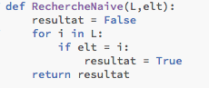

Mon professeur m'avais doné une bonne occupation durant ces vancces d'Automne... J'ai du travaillé sur la constante de champernowne et sur les nombre normaux. Ma question a été : est ce que pi est un nombre normal en base 10?
C'est une constante qui est defini de la maniere suivante: 0,123456789101112131415... bref vous avez compris qu'on met tout les nombre de 1 a l'infini après 0, et on obtient la constante. On sait que cette constante est un nombre normal donc elle permettait de tester le code.
pi est la valeur de la demi circonferance d'un cercle de rayon 1. Ce nombre permet de nombreuse operation mathematique sur les cercles et les angles
Pas de question debile tel que: "Bah c'est pas un nombre reel?".
En effet un nombre normal est un truc beaucoup plus compliqué. C'est un ombre dont la decimale comporte le meme nombre a la même fréquance un chiffre ou une suite de chiffre. Par exemple, si on prend le nombre 0,1234567809 , il est normal car on trouve une fois chaque nombre dans la decimale. Mais si on avais pris le meme nombre sans le 9 a la fin, alors le nombre ne serait plus normal, en effet, le 9 srait present 0 fois contrairement aux autre present une fois. On en deduit une fréquance qui nous permet de dire que dans le cas 1 le nombre est normal et dans le cas deux les nombre ne l'est pas
Donc la base de mon code se deroule en trois grande etapes:
Vous pouvez voir mon code ici:

Le graphique ci dessous ilustre ce qu'on obtient comme probabilité, si le nombre est un nombre normal, alors toute les barres de l'histogramme font la meme hauteur. On observe le diagramme suivant en utilisant le code sur pi grâce a la bibliothèque matplotlib :
Donc pi n'est pas un nombre normal
Le but de cet algoritme est de chercher un élément dans une liste
Ici, on parcour chaque element un a un et si on trouve l'élément cherché, alors on change le booleen en True
Alors le concept est plus facile a expliquer en shema du coup je vous ai mis un shema:

qui correspond au code suivant:

Voila, c'est un extrait de notre travail cette année
Retour a la page principale (Celle sur moi) Si vous voulez savoir comment j'ai pu vous livrer ces merveilleux projets...